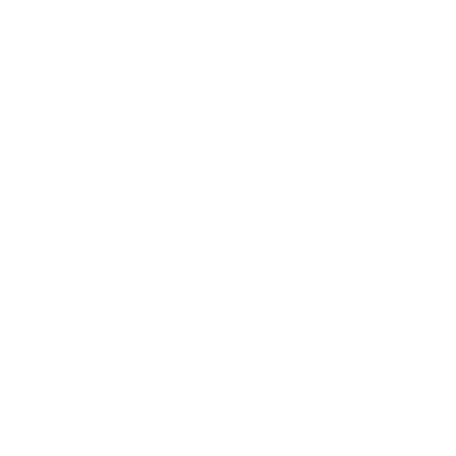
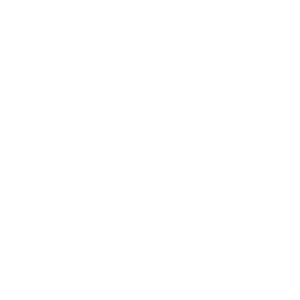

Blockchain Samurai is a CNFT project that encourages community interaction in the Japanese-style fantasy world of Hachi-Sho, Land of the Eight Provinces. Throughout the lifetime of the project, Blockchain Samurai will release 10,000 CNFTs in 10 seasons, with each season containing 10 Chapter releases. As releases progress, samurai clans will be able to influence the lore and develop a community-driven narrative that will shape future chapters.
Blockchain Samurai takes a non-traditional approach to the standard practices of other CNFT projects. Through our intermittent release schedule, we will be implementing a feature that we have termed Community-Driven Development. Each season and/or chapter in the Blockchain Samurai project will contain opportunities for CNFT holders to interact with each other and the developers to determine the future of the project. These events will determine the lore that develops between existing samurai and even the potential survival of your samurai clan. At the end of every season, the current Era will progress and new samurai will emerge as the next generation of the Blockchain Samurai.
Blockchain Samurai aims to develop an interactive, samurai-themed world that is strife with conflict and rich with lore. With the release of each chapter we will build this world together, with our community, for the sake of Hachi-Sho.
Thanks to the development of our user verification system, we will be implementing many website features to manage clan interaction and direct user engagement in community events. Through a combination of this verification process and community engagement on social media platforms, we will provide an interactive role-playing experience for our users to determine the future of the project.


 

Your samurai's background also relates to their clan designation. In this example, a lotus is shown in the background for Shibukawa Katashi, the Daimyo of the Lotus Clan. Also, note that every one of our NFTs has a holographic effect embedded in the background.
Your specific samurai is completely unique from every other samurai in the world of Hachi-Sho. We ensure this by completely hand-drawing every samurai from start to finish with only a few assets being recycled. Through this traditional, non-algorithmic process, we believe that we can ensure the creation of a more authentic world.
In the top right, you will find your samurai’s clan designation. Samurai who belong to the same clan will have similar colors and armor sets. Some samurai have the Ronin (浪人) designation which means that they have their own style and do not adhere to any clan
If your samurai has a rank of Daimyo (大名) or Shogun (将軍), this status will be displayed underneath the clan designation. While Shogun rank higher than Daimyo, both classes reserve the right to leadership within their respective clans.
In the top left, you will find your samurai’s name in Japanese. Every samurai has a unique name that contains their family surname followed by their given name! For the English translation of each samurai, check our Bushido Index.